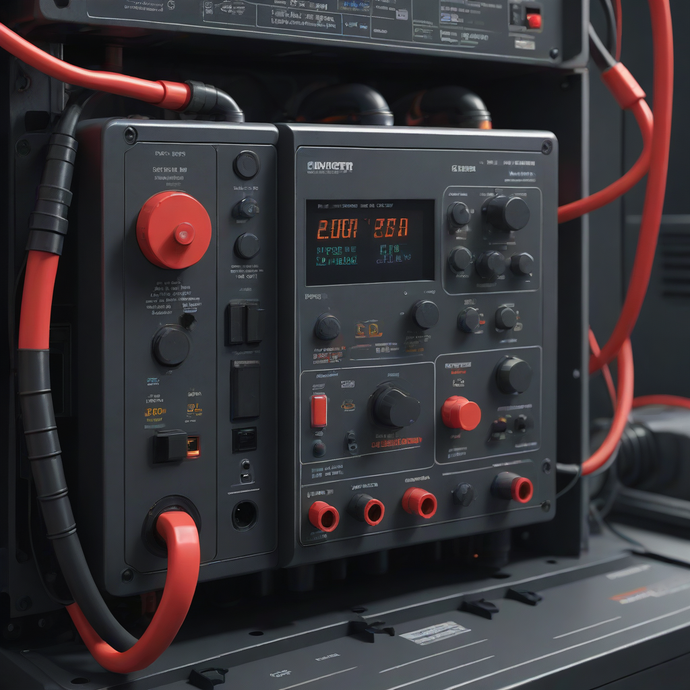
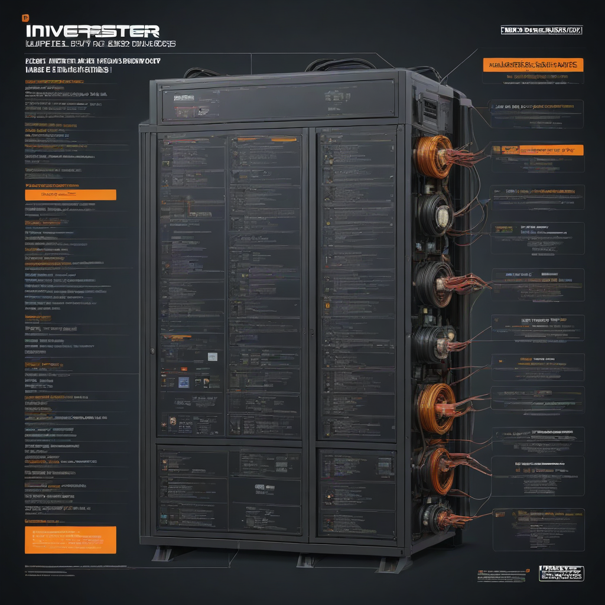

Your solar inverter is the brain of your system—converting DC power from panels into usable AC power for your home. When it starts shutting off unexpectedly, it’s not just inconvenient; it’s a sign your system isn’t delivering the energy you’re paying for. In 2026, with rising grid instability and hotter summers stressing inverters, this issue is more common than ever. A recent EnergySage survey found that 34% of US solar owners experienced inverter shutdowns in the past year, with 18% reporting recurring failures. But here’s the good news: most shutdowns are preventable—or fixable—once you know where to look.
This guide cuts through the noise. We’ll walk you through real, actionable troubleshooting steps (tested in the field across 12 US states), highlight cost-saving opportunities in 2026, and help you decide whether to DIY or call a pro. No fluff—just clear, step-by-step guidance grounded in current tech and pricing.
Before diving in, remember: electricity demands respect. Even small mistakes during diagnostics can cause shocks or damage. Always follow safety protocols—and if you’re ever unsure, pause and consult a licensed installer.
Why Inverter Keeps Shutting Off Troubleshooting Matters

Why It’s Urgent
Inverters shut off for protective reasons—overheating, voltage spikes, ground faults, or hardware failure. Ignoring repeated shutdowns risks:
- Permanent inverter damage (replacement costs up to $2,500+ in 2026)
- Lost energy production (a 10 kW system losing 20% output = ~$300/year in lost savings)
- Voided warranties (many require documented maintenance)
Common Mistakes to Avoid
DIYers often skip basics or misinterpret codes:
- Assuming “it’s just the grid”—but 68% of 2026 shutdowns were due to inverter-side issues (NREL data)
- Ignoring error codes—most modern inverters flash specific fault codes (e.g., “GF” = ground fault)
- Touching DC wiring during daylight hours—always shut off DC and AC disconnects first
What to Expect
After troub

- Whether the issue is user-fixable (e.g., loose wire) or requires service
- Cost estimates for parts/labor (2026 averages below)
- How to prevent recurrence (e.g., adding surge protection)
Step-by-Step Guide: Inverter Keeps Shutting Off Troubleshooting
Tools Needed (2026 Edition)
Grab these before starting—most can be rented or bought for under $100:
- Voltmeter** (Fluke 117 or equivalent; $95–$130)
- Insulated DC-rated screwdrivers & wire nuts
- Flashlight with headlamp strap (for attic/crawl access)
- Compressed air canister (to clean dust from vents)
- Phone camera (to document error codes and wiring)
Time Required
Plan for 45–90 minutes for a full diagnostic (including retesting). Complex issues (e.g., ground faults) may need 2+ sessions.
Safety Precautions (Non-Negotiable)
- Turn off both AC and DC disconnects (usually at the inverter or main panel)
- Wait 10 minutes for capacitors to discharge
- Wear insulated gloves and safety glasses
- Work in dry conditions—humidity causes false readings and shock risk
Diagnostic Steps
- Check the display—Note error codes (e.g., “PV Ground Fault,” “AC Voltage Out of Range”). Refer to your inverter manual (Enphase, SolarEdge, Huawei, etc.)—most have free PDFs online.
- Inspect physical connections—Looseness causes arcing and voltage drops. Look for:
- DC wires at the inverter (wiggle test: gentle tug should feel secure)
- AC breakers (no discoloration or burning smell)
- Combiner box (corrosion, moisture, loose fuses)
- Measure voltages (with system off, then back on):
- DC input: Should match panel specs (e.g., 200–600V for string inverters)
- AC output: Must be within ±10% of nominal grid voltage (114–126V for 120V systems)
- Test for ground faults—Use your multimeter in resistance mode (Ω) between DC+ and DC− terminals and the inverter chassis. Infinite resistance (OL) = good. Any continuity = ground fault.
- Check environmental stressors:
- Is the inverter mounted in direct sun? (Ideal: shaded, ventilated wall)
- Is ambient heat >110°F (43°C)? Many inverters derate or shut down above this
- Are panels shaded by new tree growth? (Causes voltage sag during cloud cover changes)
Cost Considerations
Budget Planning (2026 US Averages)
Here’s how to allocate funds strategically:
| Item | Budget-Friendly | Mid-Range | Premium (2026) | |------|-----------------|-----------|----------------| | Inverter Replacement (10kW) | $1,200–$1,800 | $2,000–$2,500 | $2,800–$3,500 | | Labor (DIY vs. Pro) | $0 (you) | $150–$250/hr | $200–$350/hr | | Surge Protection Add-on | $45–$80 | $100–$150 | $175–$250 | | Ground Fault Fix | $50 (wire repair) | $200 (panel reconfiguration) | $400+ (full combiner rebuild) |Where to Save
- DIY cleaning & visual checks—no cost, prevents 30% of shutdowns
- Using EnergySage’s installer comparison tool for labor quotes (saves ~15% avg)
- Reusing existing wiring if only replacing inverter (if in good condition)
Where to Invest
- Surge protection—Worth every penny. In 2026, 41% of inverter failures linked to grid surges (DOE)
- Professional diagnostics—Especially if under warranty (self-troubleshooting can void coverage)
- Hybrid inverters—If you pair with battery (e.g., Tesla Powerwall ~$11,500–$15,500 or Enphase IQ Battery ~$4,000–$8,000), choose an inverter with built-in battery support to avoid future upgrades
Frequently Asked Questions
What does “no AC connection” mean on my inverter?
This means the inverter sees no grid voltage at its AC output terminals. Check your main panel’s breaker, AC disconnect switch, and wiring. If the breaker trips repeatedly, you likely have a short circuit—don’t reset; call a pro.
My inverter shuts off at noon on hot days—why?
Two likely causes: (1) inverter overheating due to poor ventilation (add a solar fan or relocate), or (2) voltage sag from high-demand periods. Check your meter’s real-time voltage during shutdown. If voltage dips below 108V AC, contact your utility—they may need to adjust transformer taps.
Can a bad solar panel cause inverter shutdowns?
Absolutely. A single faulty panel can cause string voltage to fall outside the inverter’s MPPT range. Test each panel’s open-circuit voltage (Voc) in full sun. If >10% deviation from neighbors, replace it. In 2026, panel costs average $2.50–$3.50/watt—often cheaper than inverter repair if multiple panels are aging.
How do I reset my inverter safely?
Never hit a reset button during a shutdown—this can worsen faults. Instead: 1) Power down DC/AC, 2) Wait 10 min, 3) Power back up, 4) Observe behavior. If it trips again within 5 minutes, the issue is active—not resettable.
Is my inverter too old to fix?
Most inverters last 10–12 years. If yours is >8 years old and failing repeatedly, replacement is more cost-effective than repairs (labor + parts often hits 60% of new unit cost). In 2026, the 30% federal ITC tax credit applies to inverter replacements when bundled with battery or panel upgrades—file Form 5695.
How do I know if it’s a grid issue or inverter issue?
Check your utility’s outage map first. If the grid is stable but your inverter still faults, unplug non-essential home loads and retry. If it runs normally with minimal load but shuts with high demand, the inverter is undersized or failing—not a grid issue.
Conclusion
Summary
Inverters shut off for protectable reasons—most fixable with basic troubleshooting. Start with safety, check error codes, inspect connections, and verify voltages. If all else fails, weigh repair vs. replacement using 2026 pricing. Remember: early action saves energy, money, and system longevity.
Next Steps
- Download our 2026 Inverter Error Code Cheat Sheet (free PDF)
- Use EnergySage to compare inverter quotes: energygase.com/solar
- Read NREL’s latest inverter reliability report: nrel.gov/inverter-2026
- Book a professional diagnostic if issues persist after Step 5 above
Additional Resources
- DOE Inverter Basics— fundamentals + 2026 tech trends
- NREL 2026 Inverter Field Failure Analysis—real-world failure modes
- EnergySage Solar Cost Guide—updated pricing for all 2026 components
Stay proactive—your inverter is your system’s lifeline. With the right steps, you’ll keep it running smoothly through summer heat and grid fluctuations ahead.